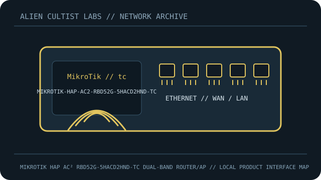

[ MODEL-SPECIFIC NETWORK HARDWARE RECORD ]
MikroTik hAP ac² RBD52G-5HacD2HnD-TC Dual-Band Router/AP
International hAP ac² with five Gigabit ports, dual-band Wi-Fi and RouterOS.

IDENTIFICATION: Confirm exact model, revision, regulatory region and product label. Link rates are manufacturer maximum PHY/link specifications, not measured payload throughput; features depend on firmware and client capability.
Model-specific specifications and compatibility
| Subcategory | Network appliances: routers & access points |
|---|---|
| Exact product/model | MikroTik hAP ac² RBD52G-5HacD2HnD-TC Dual-Band Router/AP |
| Ethernet ports and rates | 5x 10/100/1000Mb/s RJ-45, USB 2.0; passive PoE-in ether1 (18–28V). |
| Wi-Fi bands and standards | 2.4GHz 2x2 300Mb/s; 5GHz 3x3 867Mb/s, 802.11a/b/g/n/ac. |
| Streams and nominal-rate interpretation | 5 streams (2x2 + 3x3). |
| Antenna system | Internal dual-band antennas; no external connectors. |
| Management, firmware and security updates | RouterOS via WinBox/WebFig/CLI; official stable/long-term updates/security advisories. Verify package/channel, back up configuration and secure firewall. |
| Power | DC 12–30V; passive PoE-in 18–28V; adapter typically 24V 0.8A; max 16W. Verify PSU label. |
| Compatibility | Passive PoE is not 802.3af/at. Distinguish US frequency-locked and international regional SKU. |
| Revision / variant | Exact RBD52G-5HacD2HnD-TC international version; match region and RouterOS architecture. |
Revision, management and deployment notes
Revision/variant: Exact RBD52G-5HacD2HnD-TC international version; match region and RouterOS architecture.
Firmware/security updates: RouterOS via WinBox/WebFig/CLI; official stable/long-term updates/security advisories. Verify package/channel, back up configuration and secure firewall.
Power: DC 12–30V; passive PoE-in 18–28V; adapter typically 24V 0.8A; max 16W. Verify PSU label.
Compatibility: Passive PoE is not 802.3af/at. Distinguish US frequency-locked and international regional SKU.
No throughput or range benchmark is claimed. For testing, record firmware, client, channel, topology and method.
Safety and preservation
Retain adapter/PoE labels and regional SKU, record firmware provenance and remove power before servicing. Do not publish credentials, serial numbers, MAC addresses or private network details.
Manufacturer sources and manuals
- MikroTik product, ports and region variantsManufacturer specification source for the model.
- MikroTik official RouterOS manualOfficial manufacturer support, firmware, installation or manual resource.
Use exact model/revision and purchase-region documentation for firmware and regulatory decisions.